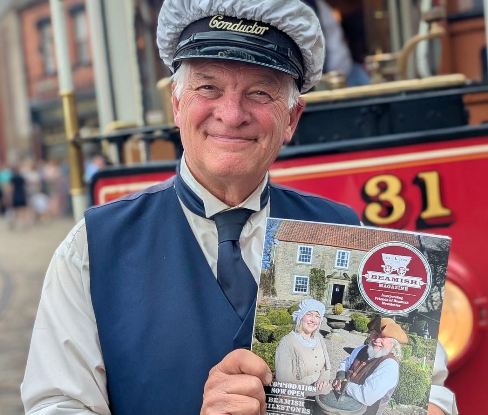
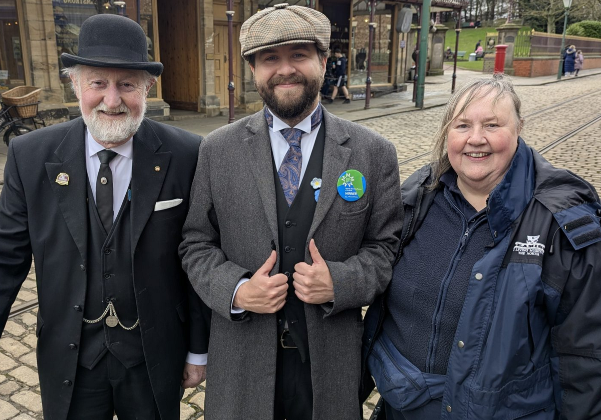

Friends of Beamish

By joining the Friends of Beamish, you’ll be helping to secure the future of The Living Museum of the North for future generations. The Friends have donated £887,000 since founding in 1967, helping museum projects such as Hetton Band Hall and Eston Church and buying Model T Fords.
Your subscription will also go towards restoration work carried out by the Friends of Beamish.
On top of the good you'll do for the museum by becoming a Friend of Beamish, there are plenty of other benefits available.
You'll have unlimited free access to the museum during opening hours including events, discounts on guidebooks and in museum shops, monthly talks by visiting speakers, and a free copy of our magazine. Sign up today via the link below, prices range from £32.50 for children to £108.00 for large families.
Donations
Beamish Museum is a self-reliant charity, and 95% of our income comes from our visitors. Donations are vital to keep the museum running and ensure the heritage of the North East is preserved for future generations.
Your donations help with maintaining the museum, developing new exhibits, and supporting the local community through our health and education work.
Donate below via Just Giving. Even small doantions are greatly appreciated; every little helps to keep the museum running.

Donate